Angular es un potente framework de JavaScript diseñado para crear aplicaciones dinámicas, escalables y de alta calidad. Es una de las herramientas más populares en el desarrollo web moderno gracias a su robustez, estructura modular y capacidad para manejar aplicaciones complejas.
¿Por qué elegir Angular?
Angular se destaca por varias razones que lo convierten en una excelente opción para desarrolladores y empresas:
Aplicaciones comunes
Angular es ampliamente utilizado en proyectos de distintos sectores, como:
Prerrequisitos para seguir este tutorial
Antes de comenzar con Angular, es importante contar con los siguientes conocimientos y herramientas:
¿Por qué aprender Angular, incluso con sus retos iniciales?
Es cierto que Angular puede ser frustrante en las primeras etapas debido a errores comunes de configuración o incompatibilidades de versiones. Sin embargo, aprender este framework te prepara para desarrollar proyectos más avanzados y trabajar en equipo de manera eficiente.
El esfuerzo inicial se compensa con el tiempo gracias a su capacidad para gestionar aplicaciones complejas de manera escalable, modular y profesional. Además, Angular es altamente valorado en el ámbito profesional, lo que lo convierte en una inversión valiosa para tu futuro como desarrollador.
Con estos fundamentos claros, estarás listo para sumergirte en el desarrollo de aplicaciones modernas con Angular y sacar el máximo provecho de este tutorial.
Windows:
node -v npm -v npm install -g @angular/cli Linux (WSL):
curl -o- https://raw.githubusercontent.com/nvm-sh/nvm/v0.39.3/install.sh | bash nvm install --lts npm install -g @angular/cli MacOS: Sigue pasos similares a Linux utilizando brew para instalar Node.js.
Comprobación de instalación:
Utiliza el siguiente comando para comprobar si ya tienes instalado Angular
ng version Si todo ha ido bien, deberías ver algo como esto:
Crea tu primer proyecto:
Utiliza el siguiente comando para crear tu primer proyecto angular "ng new" seguido del nombre del proyecto, por ejemplo, aquí lo llamaremos "proyecto-tutorial1
ng new proyecto-tutorial1 Se creará el Proyecto, escoge CSS (pulsando ENTER), continúa pulsando "y", "y". En la siguiente captura de mostramos un ejemplo
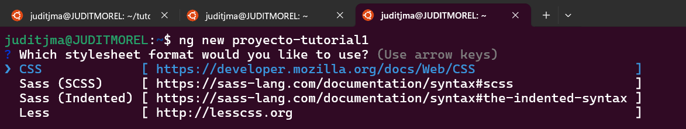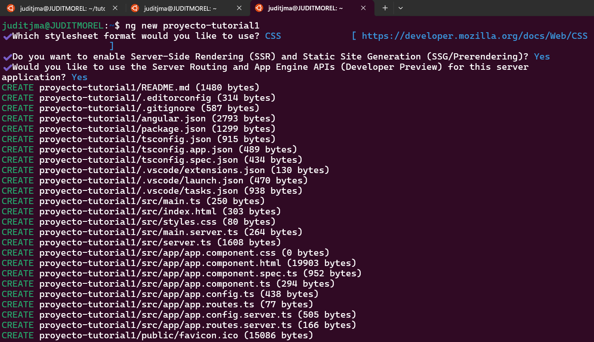Una vez creado el proyecto, ahora comprobaremos que esté funcionando y para ello necesitamos
A continuación vemos un ejemplo con nuestro proyecto "proyecto-tutorial1" creado
cd proyecto-tutorial1 ng serve 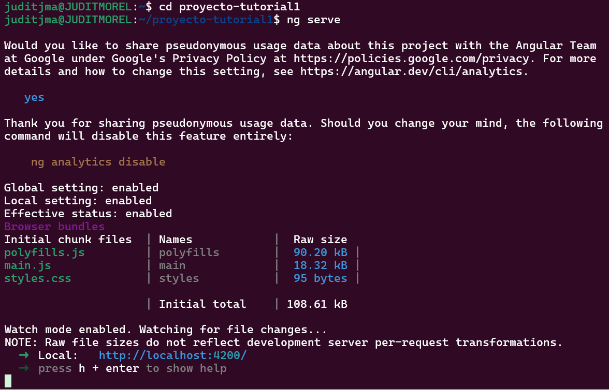Verifica que la aplicación esté disponible en http://localhost:4200/.
Deberías ver esto:
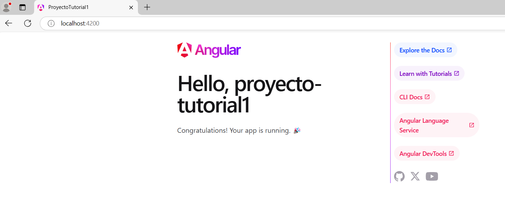¡Enhorabuena! Tienes Angular instalado. Continuemos con los primeros pasos en Angular.
Tras haber creado tu proyecto Angular (como se explicó en la sección Instalación), veamos cómo explorar y entender la estructura generada.
1. Abre el proyecto en Visual Studio Code:
cd proyecto-tutorial1code .2. Localiza el contenido inicial:
El archivo app.component.html contiene el contenido que se muestra en el navegador. Deberías encontrar algo como esto:
<h1>Hello,</h1>
<p>Congratulations! Your app is running. 🎉</p> 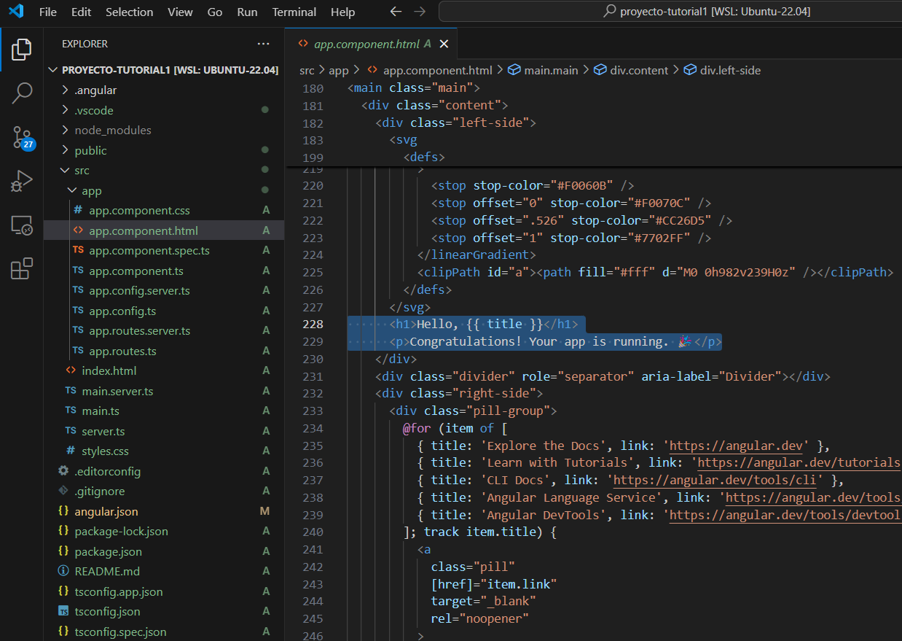Este es el contenido que se genera automáticamente al crear tu proyecto. Ahora puedes empezar a personalizarlo y añadir tu propio contenido.
3. Personaliza tu contenido:
Por ejemplo, puedes modificar el archivo app.component.html para que se vea algo así:
<header>
<h1>Bienvenido a mi primer proyecto Angular</h1>
</header>
<section>
<p>Este es un proyecto personalizado, creado por [tu nombre].</p>
<button>¡Haz clic aquí!</button>
</section>
<footer>
<p>Creado con Angular © 2024</p>
</footer> 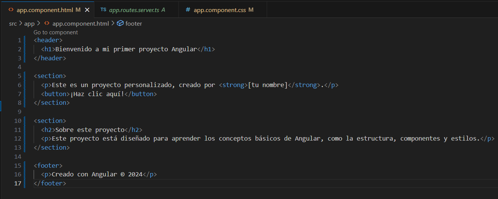Guarda los cambios y verifica cómo se actualiza la página en el navegador.
Como puedes ver, podemos trabajar con estructuras conocidas para organizar nuestro contenido:
Trabajar con estas estructuras no solo mejora la organización del contenido, sino que también facilita la accesibilidad y el diseño de la página. ¡Anímate a personalizarlas y experimenta con diferentes combinaciones!
4. Añade tus propios estilos:
Para personalizar el diseño, abre el archivo app.component.css y añade tus propios estilos. Por ejemplo:
header {
background-color: #007BFF;
color: white;
padding: 20px;
text-align: center;
}
section {
margin: 20px auto;
padding: 20px;
max-width: 800px;
border: 1px solid #ddd;
border-radius: 10px;
background-color: #f9f9f9;
}
footer {
background-color: #f1f1f1;
text-align: center;
padding: 10px;
font-size: 14px;
color: #555;
}
button {
background-color: #007BFF;
color: white;
padding: 10px 20px;
border: none;
border-radius: 5px;
cursor: pointer;
}
button:hover {
background-color: #0056b3;
} 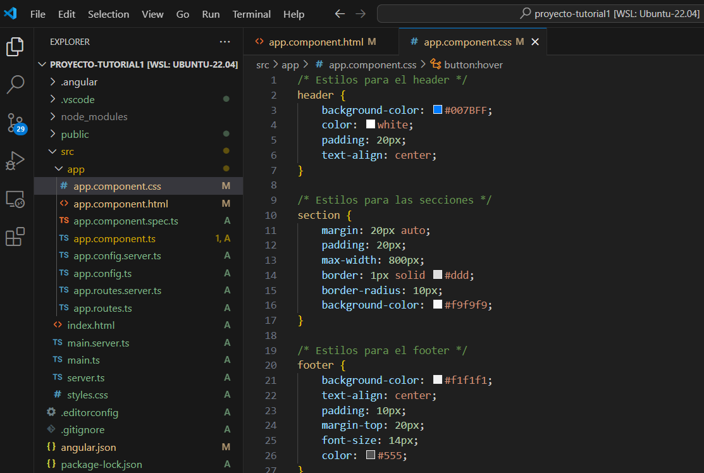Guarda los cambios y recarga la página para ver el diseño actualizado.
5. Levanta el servidor de desarrollo:
Recuerda que para ver tus cambios, necesitas tener el servidor de desarrollo activo. Desde el terminal integrado de Visual Studio Code, utiliza el comando:
ng serve6. Verifica el resultado:
Abre tu navegador y accede a http://localhost:4200/. Deberías ver algo como esto:
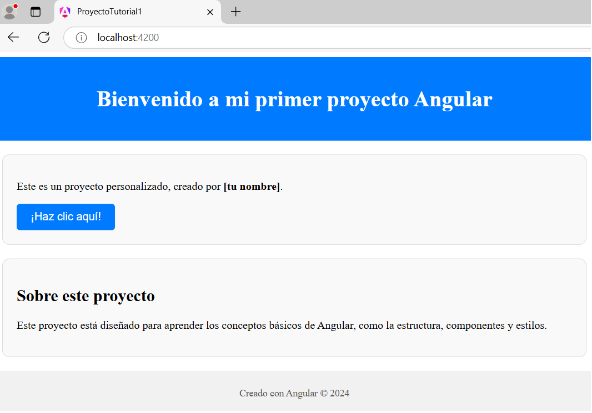<header> <nav>
<ul>
<li><a href="#">Inicio</a></li>
<li><a href="#">Acerca de</a></li>
<li><a href="#">Contacto</a></li>
</ul>
</nav>
Estiliza el menú con CSS para hacerlo más atractivo:
nav ul {
list-style: none;
display: flex;
gap: 15px;
}
nav ul li a {
text-decoration: none;
color: #007BFF;
font-weight: bold;
}
nav ul li a:hover {
color: #0056b3;
} ¡Enhorabuena! Ahora tienes control total sobre el contenido y el diseño de tu aplicación Angular. Experimenta con más cambios para aprender y explorar.
Ahora que has personalizado tu aplicación básica, es momento de explorar más funcionalidades que Angular ofrece. Con Angular, puedes dividir tu aplicación en componentes reutilizables y configurar enrutamiento para navegar entre ellos.
¿Qué son los componentes en Angular?
Un componente en Angular es una unidad básica que representa una parte específica de la interfaz de usuario (UI). Cada componente tiene:
Los componentes son fundamentales en Angular porque permiten dividir tu aplicación en piezas independientes y reutilizables, haciéndola más organizada y fácil de mantener.
Para añadir una nueva funcionalidad a tu aplicación, puedes crear un componente con el siguiente comando:
ng generate component about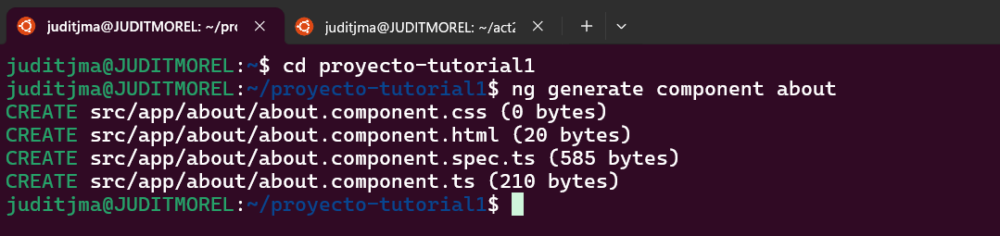Esto generará un componente llamado about, que incluye:
about.component.html: Archivo donde defines la vista (HTML).about.component.ts: Archivo donde controlas la lógica (TypeScript).about.component.css: Archivo donde defines los estilos (CSS).Por ejemplo, puedes usar este componente para crear una página "Acerca de nosotros".
Aquí tienes un ejemplo simple para el archivo: about.component.html
Recuerda que puedes personalizarlo:
<h2>Acerca de Nosotros</h2>
<p>Esta es una página creada para mostrar información adicional sobre nuestra aplicación.</p> 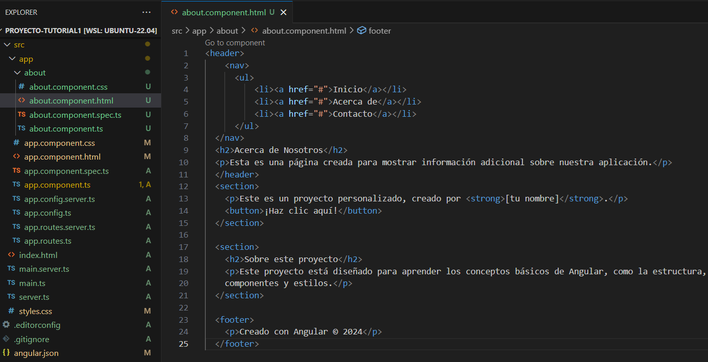El enrutamiento permite que los usuarios naveguen entre diferentes vistas de tu aplicación. Siguiendo los pasos anteriores, tu proyecto está configurado en un formato tradicional basado en módulos. Aquí te mostramos cómo configurar el enrutamiento correctamente:
app-routing.module.ts en la carpeta src/appHaz clic derecho sobre la carpeta "app" y selecciona "New File".
Agrega el siguiente contenido: import { NgModule } from '@angular/core';
import { RouterModule, Routes } from '@angular/router';
import { AboutComponent } from './about/about.component';
const routes: Routes = [
{ path: 'about', component: AboutComponent }
];
@NgModule({
imports: [RouterModule.forRoot(routes)],
exports: [RouterModule]
})
export class AppRoutingModule {
} Ejemplo:
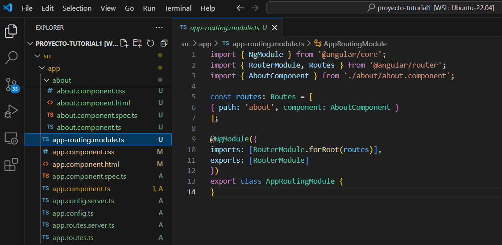app.module.ts Con el siguiente contenido para incluir el nuevo módulo de enrutamiento. Agrega lo siguiente: import { NgModule } from '@angular/core';
import { BrowserModule } from '@angular/platform-browser';
import { AppRoutingModule } from './app-routing.module';
import { AppComponent } from './app.component';
import { AboutComponent } from './about/about.component';
@NgModule({
declarations: [
],
imports: [
BrowserModule,
AppRoutingModule
],
providers: [],
})
export class AppModule {
} Ejemplo:
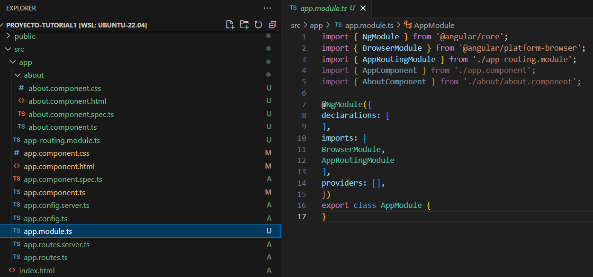ng servehttp://localhost:4200/about. Si todo está correctamente configurado, deberías ver el contenido del componente AboutComponentCada vez que crees un nuevo componente, recuerda que debes añadir la ruta correspondiente y declarar el componente en los archivos necesarios para que funcione correctamente.
Contacto, debemos añadir la nueva ruta en el archivo app-routing.module.ts. Quedaría así: const routes: Routes = [
{ path: 'about', component: AboutComponent },
{ path: 'contacto', component: ContactoComponent }
]; app.module.ts Por ejemplo: declarations: [
AppComponent,
AboutComponent,
ContactoComponent
]; Este proceso es igual para cualquier componente nuevo que quieras añadir a tu proyecto. Así te aseguras de que las rutas estén configuradas correctamente y los componentes sean accesibles en tu aplicación.
Para futuros proyectos, puedes evitar configuraciones manuales creando el proyecto con la opción --standalone=false, lo que generará automáticamente los archivos de módulos necesarios:
ng new nombre-proyecto --standalone=falseAngular Material es una biblioteca que ofrece componentes estilizados para crear interfaces modernas y atractivas. Para instalarlo, usa el comando:
ng add @angular/materialPor ejemplo, puedes usar una barra de navegación estilizada como esta:
<mat-toolbar color="primary">
<span>Mi Aplicación</span>
</mat-toolbar> Esto añadirá una barra de herramientas azul con el texto "Mi Aplicación". Puedes combinarla con otros componentes para construir un diseño más completo.
¡No te detengas aquí! Explora más componentes y combinaciones de estilos para hacer tu aplicación más dinámica y funcional. Por ejemplo:
Una vez que hayas terminado de desarrollar y personalizar tu aplicación Angular, puedes compartirla con el mundo desplegándola en GitHub Pages. A continuación, te mostramos los pasos detallados:
Sigue estos pasos para crear el repositorio en GitHub:
angularproyectInicia un repositorio local en tu proyecto y configúralo con tu repositorio remoto de GitHub:
git initgit remote add origin https://github.com/tu-usuario/tu-repositorio.gitReemplaza tu-usuario y tu-repositorio con tu usuario y nombre de repositorio en GitHub.
Angular proporciona una herramienta llamada angular-cli-ghpages para facilitar el despliegue. Instálala con este comando:
ng add angular-cli-ghpagesEjecuta el siguiente comando para generar los archivos necesarios y subirlos a GitHub Pages:
ng deploy --base-href=/tu-repositorio/Reemplaza tu-repositorio con el nombre de tu repositorio en GitHub.
Una vez completado el despliegue, verifica tu aplicación accediendo a la URL:
https://tu-usuario.github.io/tu-repositorio/
A lo largo de este tutorial, has aprendido conceptos fundamentales para trabajar con Angular, incluyendo:
Reflexión:
Angular es más que un simple framework de JavaScript; es una herramienta poderosa para desarrollar aplicaciones escalables, dinámicas y de alto rendimiento. Su flexibilidad y robustez lo convierten en una opción ideal para proyectos tanto pequeños como empresariales.
Es importante reconocer que los desafíos iniciales de configuración pueden ser complejos, pero estos pasos te preparan para trabajar con un framework profesional, ampliamente utilizado en entornos empresariales y proyectos colaborativos.
El tiempo invertido en aprender Angular se traduce en la capacidad de crear aplicaciones robustas y escalables, además de posicionarte como un desarrollador preparado para los retos del mundo laboral actual.
Este tutorial cubre los primeros pasos esenciales, pero Angular tiene muchas más características avanzadas que te permitirán crear aplicaciones aún más complejas. Temas como el manejo de servicios, el uso de RxJS para trabajar con datos reactivos y la gestión de estados con herramientas como NgRx son puntos clave para profundizar.
Recuerda que aprender Angular es un proceso continuo. Practica lo aprendido, experimenta con nuevas ideas y consulta la documentación oficial para seguir creciendo.
¡El siguiente paso es tuyo! Aplica estos conocimientos en tus proyectos y descubre el potencial de Angular como desarrollador.